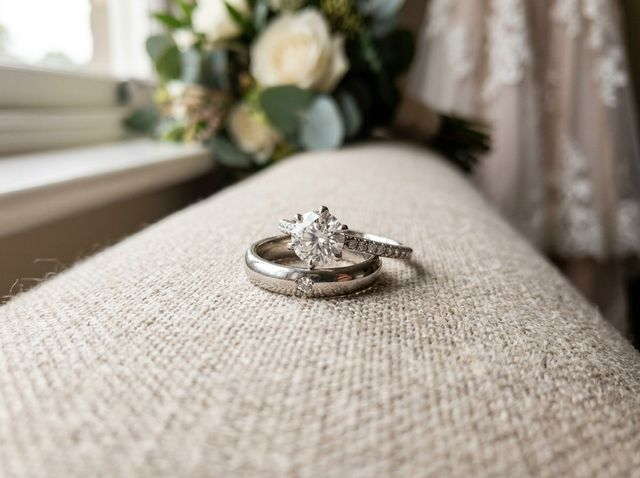
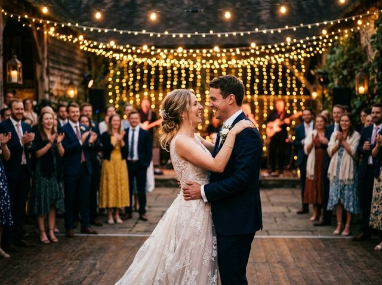
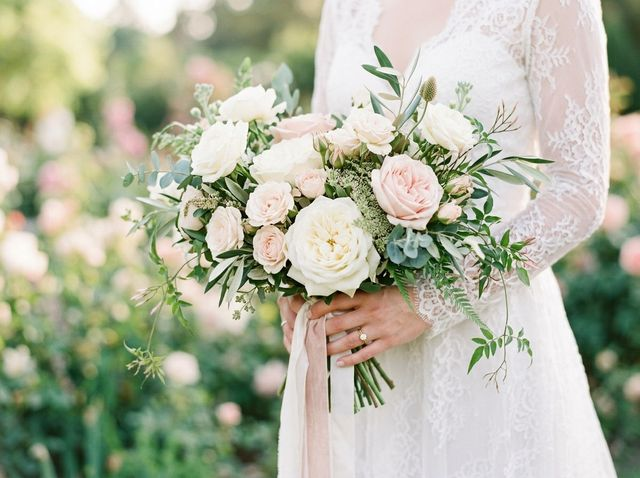
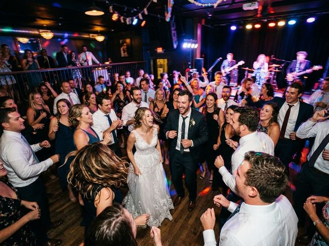

★★
LEO_0232JPEG
O Mypheed lê o JPEG que a sua câmera já embutiu no RAW — sem renderizar arquivo pesado. Estrelas, cores, pick/reject e metadados voando, com tudo rodando no seu computador.




Culling e organização no espírito do Photo Mechanic — direto ao ponto, sem assinatura, sem nuvem obrigatória.
Em vez de renderizar o RAW, o Mypheed extrai o preview que a câmera já gravou. A grade é virtualizada e o EXIF carrega em segundo plano — milhares de fotos sem travar.
0–5 estrelas, cores RYGBV, P pick, X reject, auto-avanço, zoom 100%, comparação de rajadas lado a lado e undo/redo do culling inteiro. Atalhos remapeáveis.
O RAW nunca é alterado. O culling fica em sidecar; rejeitadas vão para uma subpasta reversível; excluir manda para a Lixeira do sistema — no Windows e no Mac.
Estrelas e cores viram XMP:Rating/XMP:Label, que Lightroom e Capture One leem. Um clique abre a importação do Lightroom já com a sua seleção.
Copia 2+ cartões numa passada com verificação e backup simultâneo — o cartão nunca é alterado. O catálogo busca a coleção inteira (nome, legenda, câmera, keyword), até com o HD desconectado.
Pré-seleção local por foco/exposição (sem custo), aviso de piscada e rajadas quase idênticas, estrelas por IA com rubrica editável e legendas em português. Tudo sugere; quem aplica é você.
O Mypheed roda sobre o Node.js 24+ (gratuito) — os instaladores conferem e orientam se faltar.
Instalar-Mypheed.bat — ele confere o Node.js, baixa as dependências e cria os atalhos com ícone no Desktop e no Menu Iniciar.Jeito recomendado — cole no Terminal (⌘+Espaço, digite “Terminal”):
curl -fsSL https://mypheed.myph.com.br/install-mac.sh | bashBaixa o Mypheed para ~/Mypheed, instala as dependências e cria o app Mypheed no Launchpad. Rodar o mesmo comando de novo atualiza para a versão mais recente.
Ou manualmente:
bash ~/Downloads/Mypheed/Instalar-Mypheed.commandSim. Sem assinatura, sem conta, sem limite de fotos. Os recursos de IA (estrelas e legendas) são os únicos que usam um serviço pago — e são opcionais, com a sua própria chave da Anthropic.
Não. O Mypheed é um servidor local que abre no seu navegador — culling, catálogo e exportação acontecem na sua máquina. Só os recursos de IA, quando você aciona, enviam previews pequenos para análise.
Canon (CR2/CR3), Nikon (NEF), Sony (ARW), Fujifilm (RAF) e dezenas de outros formatos via ExifTool — qualquer RAW com preview embutido, além de JPEG, TIFF, PNG e vídeos. Pares RAW+JPEG viram um item só.
O Node é o motor que roda o servidor local do Mypheed (leitura de previews, XMP, catálogo SQLite). É gratuito, de código aberto, e o instalador do Mypheed confere tudo para você.
Windows: baixe o zip novo e extraia por cima da pasta. macOS: rode de novo o comando de instalação. Suas configurações, catálogo e cache ficam fora da pasta do programa — nada se perde.
Sim: estrelas e cores são gravadas em XMP padrão (sidecar para RAW; embutido em JPEG/TIFF). O botão “Enviar para o Lightroom” abre a importação já filtrada na sua seleção.